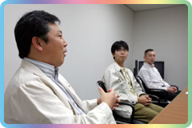
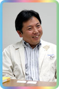
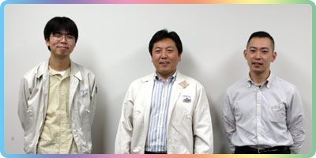

--今作のできるまでをお願いします。
江口：ＤＳ版の開発にあたっては、Wi-Fiの導入が決まっていたので、一年ほど前から本格的に作り始めました。その前は色々な実験をしていたので、厳密にいつからという感じではないんですが…。でも、このソフトとして作り出したのは2004年の夏頃ですね。NINTENDO64からの一貫したコンセプトは、「人と人が仲良く出来る場所を提供する」ということです。その為の仕掛けが沢山あって、どこかしら引っかかるものがあると。それはＤＳになっても変わりません。ただ、ＤＳは『タッチスクリーン・２画面・通信機能』というキーワードがありますから、必然的にそれを導入したものになっていきます。
野上：やはりＤＳの特性に合わせて作ってますから、タッチペンを使って遊んで欲しいですね。
江口：基本的な遊び方のイメージとしてはですね、こう…机の上にＤＳ本体を置いて、頬杖をつきながら片手でタッチペンを操作するというような感じなんですよね。
--ながら遊びというか、なんとなくというか…。
江口：そうですそうです、がっついて遊ぶのではなく、のんびりやって欲しいということで。元々、ＧＣ版でブロードバンドアダプタを使った通信機能の実験をしていたのですが、ＤＳの企画がそこに入ってきて、Wi-Fiがあるというのがわかりまして。ＧＣでアダプタを使うという話になると、遊ぶ方からしたら金銭的なことを含めて敷居が高くなってしまう。ＤＳなら通信が仕様に入っているので、じゃあこちらで行こうと。
野上：で、作り始めてから絵作りがどうしたらいいかということでかなり練りました。１〜２ヶ月くらいでしょうか。
--そこがきっちり出来てからの本格的な制作ですか。
野上：そうです。線が決まったので、これまでの雰囲気を残したまま、更にどう新しく作るかという作業に入りました。以前のシリーズも遊んで頂いたユーザーさんも楽しめて、全く触ったことがない人も違和感なく入り込めるようにですね。今回は上画面に空が見えるんですが、それを生かしたくて。マップ画面にしなかったのは、空を通じて空間がつながってるというのを見せたかったんですよ。あ、時々でも空を見ているといいことがありますよ！
--ＤＳへプラットフォームが変わるというと、大抵は２画面やタッチスクリーンという、独自の機能をどう使うかで皆さんご苦労されますよね。
江口：これに関してはそういう作り方をしてないんですよね。プラットフォームが変わるというのは、つまり前提条件が変わるということです。「２画面あるからどうにか使わなきゃ」ではなく、逆に「２画面あるから、こういうことも出来るよね」っていう考え方なんです。無線がついてるから一緒におでかけ出来るねとか。で、上画面について色々言ってた時に、スタッフが「空はどう？」って言ったのが採用されたんですね。「これがあるからこうできる、ああできる」というのがどんどん沸いてくるわけで。なので、思いつくままに詰め込んで作りました(笑)。
--「思いつくまま作った」とは、物作りにおいては素晴らしいことですね(笑)。
野上：今回は上画面を空にしましたが、普通はマップだったりステータス的な使い方をしますね。でもこれってそういうゲームじゃありませんから。なんでもキチキチ作って、機能的にこう遊べっていうのがないので。空にすることで、時間の推移であるとか、季節感なんかも感じられていいですよ。地平線の表現にしても、僕は『ドラム』って呼んでるんですけど(編註：フィールド上を移動する時、ドラム缶が回転していくような見え方をする)、この表現も良かったかなと。

江口：例えばマリオカートなんかは、遊び方や目的が決まってますよね。だからサーキットのマップや機能的な画面はあった方がいい。だけど同じ物であってもゲームによって使い方が変わるのは当然で、これはそういうゲームじゃないよねってことで空になったわけです。
野上：どんなハードにも制約はありますから、それぞれのなかでどう作り、遊んでもらうかというのを考えるわけですよね。そのゲームによって処理の限界がどこであるか、というのは違ってきます。さっき言ったマリオカートは、動作を60フレームにして、更に表現を出来るだけ滑らかにしないといけないわけです。でもソフトが変わればその処理の限界点が変わってくるということですね。で、思いつくままに作った結果、しわ寄せがサウンドの方に出てしまいました。えー、「通常の５割減で…」という(笑)。
|
--５割もですか？ そんなに少ない容量で作れたんですか？
戸高：そこはなんとか頑張りました。メモリに制限があるということで、そのなかで出来ることを考えまして。まず音数が少ないもの、そして聞いていて気持ち良いものにしようと。ＤＳの小さなスピーカーからサウンドが聞こえた時、嬉しかったり気持ち良かったりというのを考えると、音の数自体が少ない方がいいんです。音が詰まっていると、ずっと聞いていられなくなります。音と音との隙間から、このゲームの空気感であるとか、風の感じなんかを醸し出せないかなと。そうすると、いい言い方をするなら「スッキリした感じ」、そうでない言い方をすると「節約サウンド」になるわけです(笑)。
--ここはぜひ、いい言い方で(笑)。それがゲーム性とマッチしたんでしょうか。
戸高：そうですね。がっついてないゲームに、がっついてないサウンド、ということで。音が出しゃばるんじゃなくて、より背景に近いサウンドにしようと。ＤＳの機能にバーチャルサラウンドというのがありますが、通常のスピーカーから聞こえる音よりも、より広い幅から耳に入ってくるものです。このお陰で相当助かっています。今回は曲作りにも参加できたので、お陰様で楽しかったですよ。ＢＧＭはがっぷり作らせてもらいましたから。やっぱり現場の仕事はいいですねー。
野上：新曲は60〜70曲あり、その大半は彼が作ってます。（編集部注：11月9日、新曲数を更新しました。）引き継いだ曲も、ちゃんと聞き比べると全く違うものになってますよ。
--メモリ以外に、心がけていたことはなんでしょう。どうやって曲を作られました？
戸高：プレイヤーの足音が聞こえてくるイメージというのが常にあって。足音が聞こえなくなるような音楽はナシだな、と。このゲームの場合、その世界の質感と実際に操作している自分の感覚とを結ぶ上で最も重要なのが足音なので、それを邪魔するものであってはいけないんです。曲を作る時は、頭のなかでイメージをある程度はっきりさせてから作ります。イメージが固まっていなくてもいくらでも作ることは出来るんですが、それ以前に音を出してしまうと、"手癖"だけで作ってしまうんですよ。それはゲームにとっては非常に不幸な出来事だと思うので、そういう作り方はしませんでした。この話は今回のゲームに限った事ではないのですけどね。どんなゲームに対してもそういう風に接して取り組んでいます。
野上：今回は１日の24時間、１時間毎にそれぞれ曲がありますから。それもぜひ聞いて欲しいです。…でも、夜に曲作りをしていると、夜のイメージの曲になりません？
戸高：そう！ そうなんだよ(笑)。なので、時間をずらしつつ元気な曲、落ち着いた曲と作って行き、24時間のなかで割り振って、「ちょっとこんな感じが足りないかな」ということで差し色的な曲を作ったりしました。
野上：サウンド部隊からの提案で、ゲームに取り入れたものもありますよ。ギターなんかの楽器も家具にあって、別々に２人で触ると同時に鳴らすことが出来るんです。
戸高：同時に２つの音を鳴らすというのは、処理的にかなりきついので、サウンドプログラマーが相当頑張ってくれました。サウンドのお勧めは喫茶店ですね。博物館のなかにあるんですけど、お店に入ると急に異質な雰囲気になるんですよ(笑)。『喫茶 はとの巣』といって、マスターがまたいい感じで。その曲は純喫茶の雰囲気にかなり音がハマったかなと。
|
--ニンテンドーWi-Fiコネクションについてですが、どういうスタンスでゲーム性と融合させたんでしょう。
江口：このゲームは、誰かとつながるとかコミュニケーションを図るためのものですから、それを更に深めるということで使って欲しいと。Wi-Fiを使う場合、特定の知っている人を自分の村へ招待できるんですが、そこでどうするかはその人次第です。これは『どうぶつの森』自体のコンセプトと同じですね。大事にしている村に友達を招いて、そこで更にやりとりしてもらう。そのなかで、ユーザーさん同士が「あ、こんなことも出来るんだ！」という発見であったり、案内してもらって楽しんだりということをしてもらえればと。
野上：既存のチャットやオンラインゲームだと、一生懸命になってそこでやりとりしなきゃいけませんよね。でもこれは同じ空間を共有している、という感覚がとても大きいんです。それだけで楽しいというか。僕が大学の時なんかは、友達の部屋に遊びに行って、片方はゲームをしてるんだけどもう片方は漫画を読んでる、時間になったら「じゃあね」と別れる…たったそれだけだったのに、同じ部屋にいるだけでなんとなく楽しかった。そういう感覚で楽しんで欲しいなと思います。

江口：ＧＣ版のおでかけ機能では人を自分の村へ呼ぶことが出来ましたが、今回は自分の姿を見せられますので、その違いは大きいと思います。前作では村に呼ぶだけで、同じ空間に一緒にいることはできなかったので。人に自分を見せられるとなると、また遊び方が違ってきますね。アクセサリーやデザインした服を使って突飛なスタイルを見せたりすると、刺激を受けて真似したりとか。既存の枠に収まらず、独自の遊び方が出来ますよね。
--ニンテンドーWi-Fiコネクションを使うといいことがあったりします？
野上：あります。あやしいネコというのがいまして。のっぺらぼうのネコがいるんですよ、本当に怪しいんですけど(笑)。「カオを描いてくれー」って来るので、それを描いてあげる。するとおでかけした先の村にそいつが現れたりするわけです。「このカオはどこどこのだれが描いて…」って話すんですが。基本的には知っている人とのやりとりなんですけど、これだけはWi-Fiを介して見知らぬ人と接点ができてしまうんですね。
江口：そういうのは『すれちがい通信』機能にもあって、空の星座が変わったり、どうぶつが引っ越したり、浜辺に流れ着くメッセージボトルを使うことが出来たりします。自分で作ったメッセージもそのデータが誰の所に現れるかもわかりませんから、面白いと思いますよ。
--私が体験した時は、招いてもらった村に行ったら、相手が「来た来た来たー！」と叫んだんですよ(笑)。
江口：最初に友人が自分の村へ来た時のインパクトっていうのは、本当にすごいですよ。門の向こうから人が来るんですけど、みんな「来た来た来た来た来た！」って叫びます(笑)。
野上：開発中、初めてつながって相手が現れた時の衝撃はすごかったです。
戸高：４人集まった時に、それぞれ好き勝手なことをしていたんですが、それがまた嬉しかったですよ。
江口：通信プレイのデバッグをやっていた時は、例えば５分間で何匹魚が釣れるかって遊んだり、あと、ベル(お金)を埋めて宝探し大会とか、隣の席にいるのにチャットしてニヤニヤしたり(笑)。別に同じことをしなくても、自分は魚を釣るけど相手は虫を捕ったりしてもいい。でも近くで走り回られると魚が逃げるから、やめろよって思うんですけど(笑)。
--一緒になにかをするのも、それぞれ自分勝手に遊ぶのも楽しいということですね。
江口：そうですね。だから、「Wi-Fiってなにが楽しいの？」と聞かれると非常に困るんですよ。人が集まるだけで楽しいっていう場がゲームのなかにあって、気軽に入っていけるということなので。ゲームとは必死になってなにかをするべき、と思っている人からしたらちょっとつまらないかもしれません。だけど、そういう人たちにも遊んでもらえるような仕掛けは沢山ありますよ！
--Wi-Fiを使うのも、ユーザーさんオリジナルの楽しみ方があるでしょうね。
野上：そうなんですよ。こちらが考えもしなかった遊び方をしてくれると嬉しいですね。
江口：これは知らない人同士では遊べないのですが、それは逆に言うと安心して遊べるということでもあります。ただ、これがどう広がって行くのかな、という風に思ってもいるのでちょっと気になりますね。話題を広げられるような仕掛けを色々考えているので、そこは期待してください。
--では、メッセージをお願いします。
戸高：お好きに楽しんで下さいと。部屋のなかにいる時に、１時間おきに鳴る時報のチャイムがあるんですが、その音がまた気持ちいいのでぜひ体験してみて下さい。部屋のなかに居るにも関わらず、屋外の広がりを感じられるような、そんな空間が創れたのではないかと自負しています。
野上：のんびり遊んで下さい。がっつかずに、ですね。今回は四季の移り変わりにこだわりがあるので、気付かないかも知れませんが季節ごとになにかしら違うので、よく見てみると楽しいと思います。村のモデルは特にないんですが、実は村の季節表現は京都標準で作ってあるので、京都の四季が感じられると思います(笑)。
江口：これは仲良しの人に集まって遊んで欲しいゲームです。家族、友人、恋人同士がひとつの部屋で遊ぶことも出来ますし、離れた人とも通信で遊べます。仲良しと更に仲良くなれますので、沢山そういった人を作って仲良く遊んで下さいね。
--どうもありがとうございました！

|
|